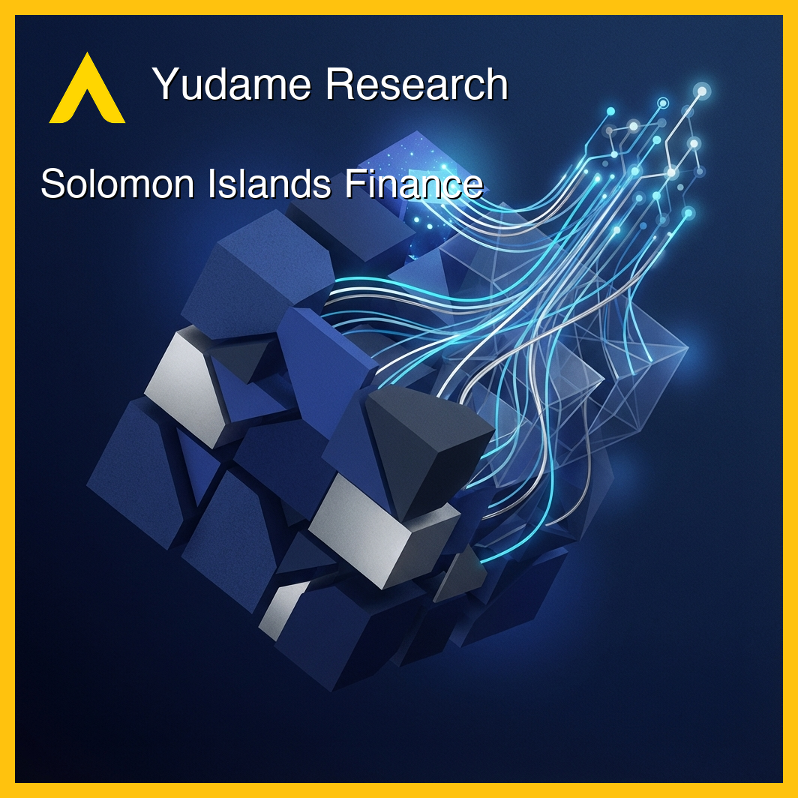
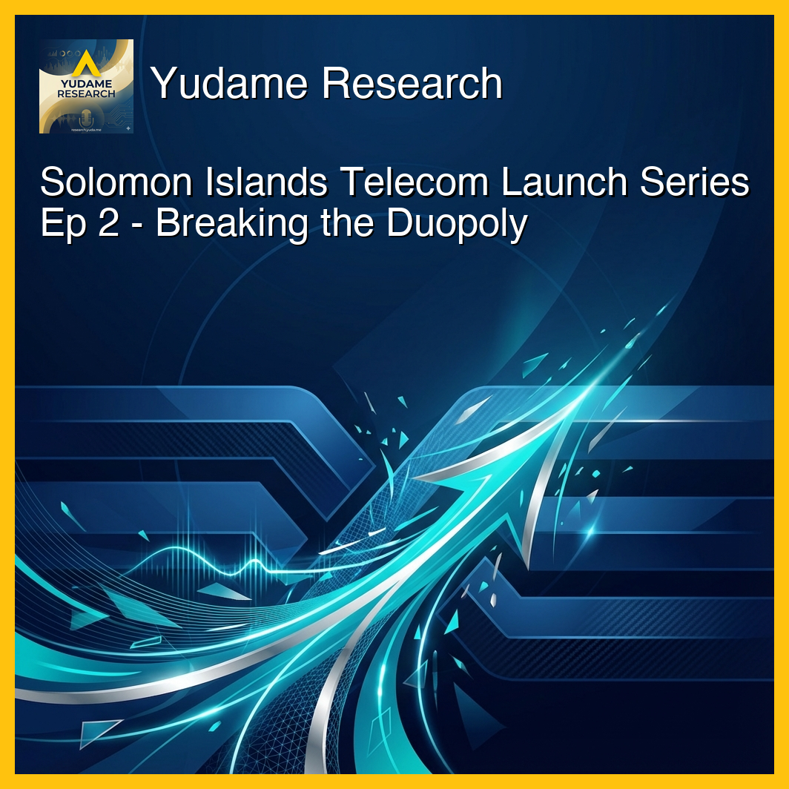
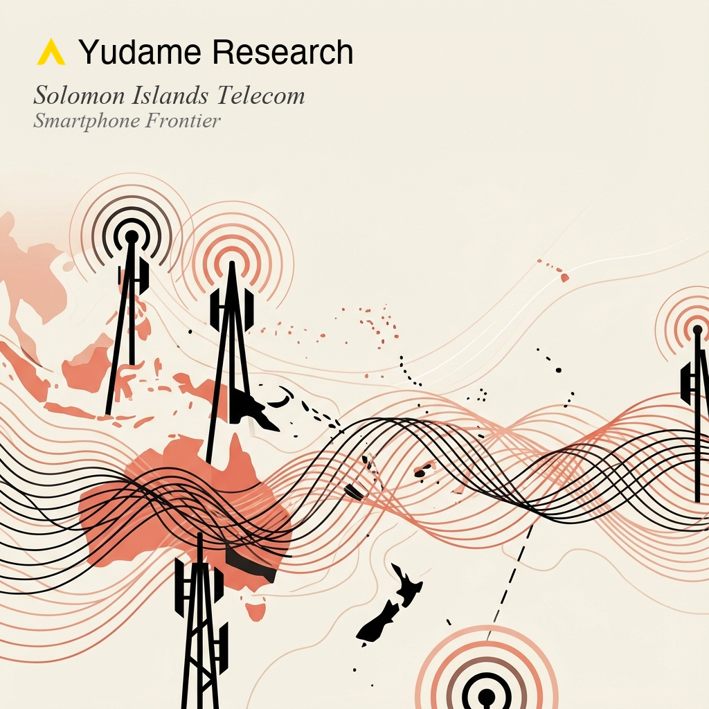

Solomon Islands Telecom
Strategic partnership-enabled market entry in Pacific telecommunications.
Episodes

The financial ecosystem and payment infrastructure landscape in the Solomon Islands.
More
The 80% cash economy, M-SELEN's 350,000-user explosion in 2 years, banking infrastructure limitations (15 branches, 59 ATMs, 72%+ concentrated in Honiara), and the financial inclusion opportunity (75% unbanked, 70% have mobile phones).

Market entry strategy and competitive positioning for a third mobile network operator.
More
How the Our Telekom vs Bmobile-Vodafone duopoly shaped the market, lessons from Digicel's 2,400% subscription growth in PNG, and positioning strategy (price vs service quality vs coverage).
Leveraging SATSOL's fiber/Starlink infrastructure to solve the 1,000-island challenge.
More
How partnerships change economics vs build-from-scratch, Starlink satellite backhaul vs traditional submarine cable solutions, and network resilience in disaster-prone regions.
Launching with integrated mobile money capabilities that incumbents took years to build.
More
Competitive advantages of integrated mobile money from launch, IumiCash's Money Transfer Service license enabling international remittances, and use cases driving adoption.
End-to-end go-to-market execution from spectrum allocation to first customer activation.
More
TCSI licenses and spectrum allocations required, initial network coverage strategy, SIM card distribution across dispersed islands, pricing strategy to break duopoly, and brand positioning.

Serving first-time smartphone users with device provisioning strategies as market expansion tool.
More
The 59-percentage-point gap between network coverage (86%) and mobile internet usage (27%). Five interlocking barriers: device affordability, infrastructure quality, digital literacy, content availability, and gender inequality. Device financing models and Vanuatu's "Play or Pay" policy showing how regulation can drive inclusion.